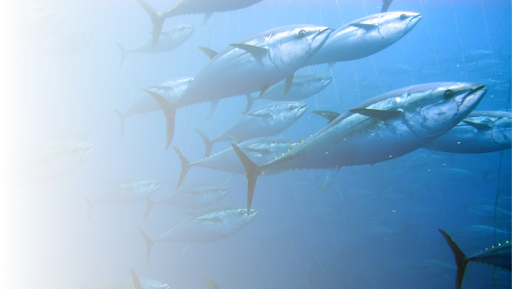

Do mar ao destino, precisão que preserva a qualidade
MONITORAMENTO DE TEMPERATURA EM
Containers Refrigerados
em cargas de
Para proteger a qualidade em cada etapa
do
transporte
CONTROLE, QUALIDADE PRESERVADA

Sobre nós
Trabalhando com
Confiança e Excelência.
em cada container, em cada grau de temperatura, em cada entrega.
Somos uma empresa especializada no transporte de cargas de atum refrigeradas, unindo tecnologia de ponta e rigor operacional para preservar a qualidade do seu produto do mar ao destino.
Veja nossos valores →
VALORES
Mais do que transporte,
uma promessa
Monitoramento contínuo, precisão em cada detalhe e um compromisso inegociável com a qualidade, para que você possa confiar, do início ao fim da jornada.
Integridade e
Transparência
Fornecimento de dados verdadeiros e com impacto real para sua indústria.
Qualidade
no Produto
Frescor preservado, do primeiro ao último quilômetro.
Padronização
Garantia de que cada tanque seja monitorado de maneira integral, protegendo a identidade da marca.
PRODUTO
Onde a temperatura certa nunca é um acaso
Cada container é equipado com sensores de última geração que monitoram a temperatura em tempo real, do carregamento à entrega. Nenhuma variação passa despercebida e nenhum detalhe é deixado ao acaso. É precisão a serviço da qualidade do seu produto.
Monitoramento em tempo real
Monitoramento de temperatura durante o processo de transporte do peixe.
Poder de marca
Garanta confiança e credibilidade para a sua marca investindo na qualidade do seu produto.
Rastreabilidade
Tenha controle do seu transporte a partir de registros gerados por meios de dados coletados pelo nosso sensor.
Conformidade Legislativa
Assegure a segurança e qualidade do seu produto .
Quantos kg você carrega por carga?